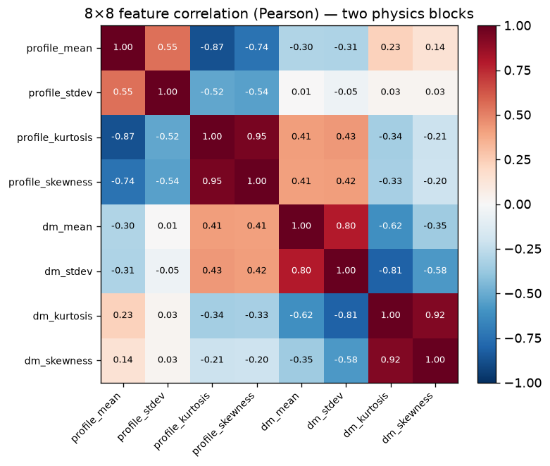

The score was free. We earned marks on everything the score hides.
A leakage-audited, cost-aware classical ML pipeline — calibrated probabilities, a written cost model, and an astrophysical reading of what the model learned.
← → to navigate · N for speaker notes · F11 fullscreen
Why a high score is not the achievement
"A competent Random Forest reaches excellent discrimination within minutes. That ease is precisely why the project is scoped differently: hitting a high score is not the achievement here." — the brief, §7.1
91.0% accuracy — predict "not a pulsar" for every candidate. Completely worthless.
ROC ≈ 0.98 — nearly free for any reasonable model on 17,898 tabular candidates.
So we built the project around what the brief actually scores: trustworthy probabilities, a cost-model threshold, and interpretation.
The data — and the physics inside it
17,898 human-verified candidates, High Time Resolution Universe Survey (South), Parkes
9.16% genuine pulsars — 9.9:1 imbalance, retained as-is in the test set
8 features: 4 statistics of the folded pulse profile, 4 of the DM–SNR curve
UCI id 372 · CC-BY 4.0 · DOI 10.24432/C5DK6R · release version + download date + acknowledgement in README
Two physics blocks, visible in the correlation matrix

Profile block: mean ↔ kurtosis −0.87, skewness ↔ kurtosis +0.95 — one measurement, the folded profile
DM block: mean ↔ stdev +0.80, stdev ↔ kurtosis −0.81, skewness ↔ kurtosis +0.92 — the dispersion sweep
Median |corr with target| only 0.446 — no single feature suffices; modelling is justified
Before any model: can the numbers be trusted?
exact duplicate rows overall: 0
duplicates between train and val: 0 train and test: 0 val and test: 0
index disjointness: OK (train/val/test pairwise disjoint)
train: n=10738 pos= 983 pos_rate=0.091544
val: n= 3580 pos= 328 pos_rate=0.091620
test: n= 3580 pos= 328 pos_rate=0.091620
scaler fit on train only: OK (n_samples_seen_ = 10738 == train size)
calibration fold disjoint from train and test: OK
Most teams assert "we did a stratified split". We print the proof.
Notebook §6b — every line above is printed by code, not typed.
The test set is touched exactly once
Select hyperparameters, calibration method, threshold — on train + validation only
Evaluate once in a single cell → writes results/test_predictions.parquet, results/final_metrics.json
Persist the fitted Random Forest + record SHA-256 hashes of all four artifacts
Every later analysis reads the saved predictions — demonstrated in the notebook itself
The tested RF: 400 trees, depth 20, min-leaf 2 — selected by 3-fold stratified CV on PR-AUC. Baseline: standardised logistic regression (val ROC 0.9744).
Repeated stratified CV (5×2), all calibrators cross-fitted — none scored on its own training data
Selection by mean CV Brier, train+val only: none wins (0.01721); isotonic also degrades ranking
Test ECE 0.0099 — the class-weighted forest is already near-calibrated
We report the tested answer, not the expected one.
Threshold from a written cost model — not 0.5
Written model: missed pulsar (FN) costs 10 — lost discovery; false alarm (FP) costs 1 — wasted telescope time
Curve minimum: T = 0.54 — zero missed pulsars at 42 false alarms on the selection set (5:1, 10:1, 20:1 agree)
Why 0.54 vs textbook 1/11 ≈ 0.091?balanced_subsample (9.92× positive weight) shifts 0.091 → 0.498 in balanced score space, and the refitted train+val zero-FN knee lands at 0.54
Test at T=0.54: precision 0.918 · recall 0.857 — TN 3227 / FP 25 / FN 47 / TP 281
What the model listens to — the astrophysics
profile_kurtosis dominates: PR-AUC drop 0.633 — 17× the runner-up
A pulsar is a lighthouse: the folded profile is a sharp, peaked, repeating blink; interference folds flat and near-Gaussian
DM statistics refine, not carry: detect on shape, confirm on dispersion — the real survey pipeline's structure
Learning curve (3-fold CV up to 7,159 labels) rises to ~0.92 PR-AUC by ~5,500 labels, then flattens → ceiling in this range is feature information, not label count
Final test evaluation — single pass, with CIs, misses first
Metric
Estimate
95% CI (B=2000, paired)
ROC-AUC
0.9777 ✓ (target ≥ 0.97)
0.9671 – 0.9872
PR-AUC
0.9332
0.9117 – 0.9542
Precision @ T=0.54
0.9183
0.8889 – 0.9461
Recall @ T=0.54
0.8567 ✗ (target ≥ 0.90)
0.8201 – 0.8933
Brier / ECE
0.0166 / 0.0099
0.0135 – 0.0199
Honest misses, documented: recall≥0.90 at precision≥0.90 not met at the cost-optimal point; "improved Brier after calibration" not met — because cross-validated selection picked no calibration, with a measured reason. Gate 4 allows "a documented reason why not" — ours is measured, not asserted.
Beyond the brief — done, demoted to appendix
Paired bootstrap CIs on every metric (B=2000, stratified, seeded) + cost-ratio sensitivity table
Ground-up NumPy rebuild of LogReg, tree, forest, MLP, 1D-CNN (~350 lines) — gradchecks 2.5e-08 / 6.6e-10, twins within ~0.002
Error analysis: the missed pulsars are feature-atypical, score ~0.1 — unrecoverable by thresholds; the fix is modality (plot pixels), and HTRU2 ships none
The mainline is deliberately classical — the supplementary tracks support it, they don't replace it.
Everything is reproducible
One command: nbconvert --execute pulsar_selection.ipynb — SEED=42, pinned requirements, cached data
Executed notebooks committed; site figures regenerate deterministically; models persisted with hashes
Every number in this deck is printed by a notebook cell
"The score was free. We earned marks on everything the score hides."
Appendix — rubric row → our evidence (handout)
Rubric row (weight)
Our claim
Evidence
Data curation (20%)
Card, 8×8 correlations, dedup audit, release version + download date + acknowledgement
§1–2, §5, §6b; README
Split discipline (20% — heaviest)
Stratified pre-weighting; leakage proven by code; test touched once
§6–6b, §10
Modelling (20%)
LogReg baseline alongside CV-tuned RF; hyperparameters recorded